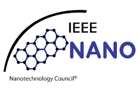

*The Institute of Electrical and Electronics Engineers (IEEE) is a globally recognized organization dedicated to advancing technology for humanity. Founded in 1963, IEEE has grown to become the world's largest professional association for the advancement of technology, with over 400,000 members across more than 160 countries.
*At its core, IEEE fosters innovation through collaboration, providing a platform for engineers, scientists, and researchers to share knowledge and develop new ideas. The organization publishes a vast array of journals, sponsors conferences, and develops standards that guide the industry.
* IEEE also plays a crucial role in education and professional development. Through various programs and resources, it supports lifelong learning and helps professionals stay at the forefront of technological advancements. Whether you’re a student, a seasoned professional, or simply passionate about technology, IEEE offers opportunities to connect, learn, and contribute to groundbreaking developments in fields such as electrical engineering, computer science, robotics, and telecommunications.
JOIN US IN SHAPING THE FUTURE

The IEEE Nanotechnology Council (NTC) is a leading organization dedicated to promoting and advancing the field of nanotechnology. Established under the IEEE umbrella, the NTC serves as a global platform for researchers, professionals, and students involved in the study and application of nanotechnology. Nanotechnology involves manipulating materials at the nanoscale—typically between 1 and 100 nanometers—to create new properties and functionalities that are not possible at larger scales. This emerging field has vast implications across various domains, including electronics, medicine, energy, and environmental science. The NTC focuses on fostering innovation through collaboration, hosting international conferences, publishing cutting-edge research in its journals, and facilitating networking opportunities among its members. By addressing critical global challenges, such as energy efficiency and healthcare advancements, the IEEE Nanotechnology Council plays a crucial role in shaping the future of technology and its applications.
Advancement of Knowledge:Facilitate research and innovation in nanotechnology by organizing conferences, workshops, and seminars. Networking Opportunities: Provide a forum for professionals to connect, collaborate, and share ideas through publications and events. Educational Resources: Offer educational materials and resources to help members stay informed about the latest trends and technologies in the field.
Conferences and Symposia: The NTC sponsors and organizes conferences focused on nanotechnology topics.
Publications: It publishes journals, newsletters, and other resources to disseminate research findings and industry news.
Technical Committees: Form various committees to focus on specific areas within nanotechnology, such as nanomaterials, nanoelectronics, and biomedical applications.
Membership in the NTC is open to IEEE members and those interested in nanotechnology, providing access to resources, networking opportunities, and the latest research in the field.
The NTC has a global presence, collaborating with other organizations, institutions, and councils to promote nanotechnology research and applications worldwide.
For more information, you can visit the official IEEE Nanotechnology Council website or their social media channels to stay updated on events and resources.
Dr.Sai Prakash